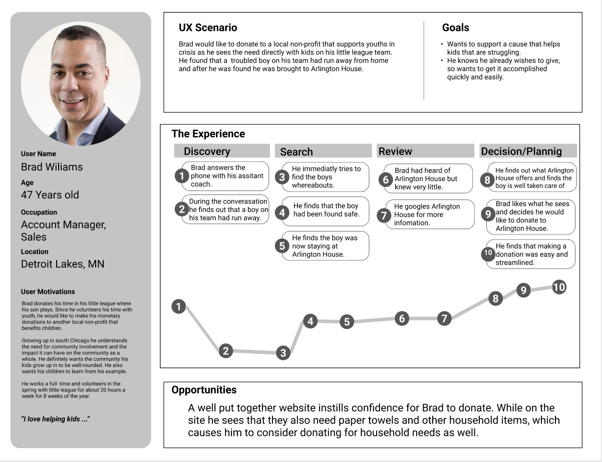
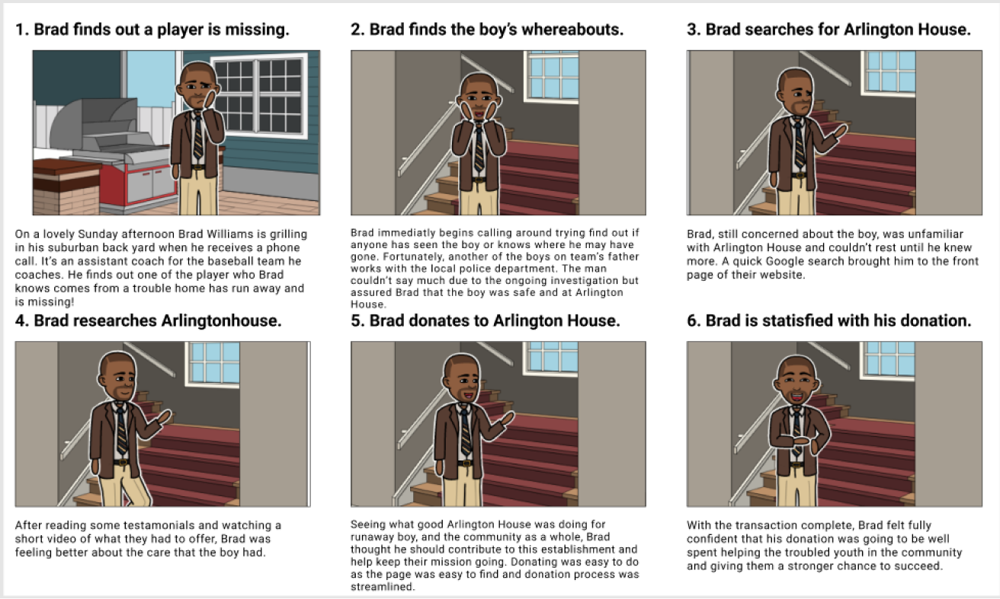

The Arlington House website was created to achieve donation goals, both monetary and needed household items. We have observed that the Arlington House website isn't meeting baseline metrics for donation KPIs. This is causing Arlington house to not have what it needs to serve the homeless youth it has pledged to help. By improving the Arlington House website so that users wishing to donate can easily see what is most needed for Arlington House to meet their donation quotas to continue serving teens in need.
Summary
Role: UX researcher, UI desktop designer
Team: 4 people Time: 2 weeks
Tools Used: Figma, Trello, Miro, Google Forms, Slack
Research
We started by doing 5 user interviews about how people donate to non- Profits since our main goal was to increase donations.
We then sent out surveys to explore the demographics of who gives, and how and why they feel confident to give online.
With the knowledge we gained from our surveys and interviews, we created “Brad Williams” to make designing for our user easier.
User Persona

User Journey
Storyboard
Definition
Problem Statement
We believe engaging content and clear Call-to-Actions will inspire users to donate and volunteer to support displaced youth in transition and need.
Idiation
Site Map
We created a site map to illustrate the road map that the user will be able to achieve their goals in the easiest, most pain-free method possible.
Wireframe Mockups
Low fidelity mock-ups were created to better illustrate wht the interface will look like and how the user will interact with the site. This ws done for both desktop and mobile and then user tested.
Prototyping
Final Prototype
After testing and several iterations later, we concluded on our final design.
Conclusion
In concusion, this project was a giant growth opportunity for my entire team. We were able to use are hard skills like design and research, as well as our soft skills like listening to differing opinions and taking criticism from peers. Even we developed a lot during this project, it also shows how much further we need to go. Better use of white space, UX writing, and UI design all have room for improvement.